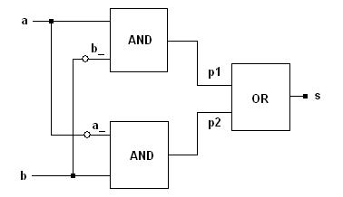

Next: Logic Gates, Previous: Basics, Up: Introduction to libLCS
In this section, a simple example is presented which will help a new libLCS user to get started. Though simple, it will introduce the basic constructs and a few of the 'off-the-shelf' logic gate modules provided in libLCS.
We will build and simulate a circuit which behaves like a 2-input XOR gate using only AND, OR and NOT gates. Let
a and b be the inputs to our circuit and let s be the output. Then, the boolean function for
s is:
s = ab' + a'b
Hence, to generate s from a and b we require two 2-input AND gates, one 2-input OR gate, and two
NOT gates. The circuit diagram is as follows (the small circles/bubbles represent NOT gates):

Each node in the above circuit translates into a bus in the case of libLCS. As marked in the circuit, seven
single-line busses a, b, a_, b_, p1, p2 and s are required to describe the circuit. The first step
in our program will be to declare these 7 single-line bus objects. Busses are encapsulated into a template class
Bus<int bits>. The number bits denotes the number of lines in the bus and takes a default value
of 1. We will declare the bus objects for our circuit as follows.
Bus<1> a, b, a_, b_, p1, p2, s; // The bus names are same as
// that in the diagram above.
// The template argument 1
// denotes single-line busses.
After declaring the busses in the circuit, the next step is to initialise the logic gate modules in the circuit.
We will first initialise the NOT gates. The NOT gate modules are provided as a template class
Not<unsinged int delay>. The delay parameter denotes the propogation delay of the NOT gate. It takes a
default value of zero. The NOT gate initialisation is done as follows.
Not<> ng1(a_, a), ng2(b_, b); // We donot pass any template paremeters
// to the NOT gate class as we shall use
// the default value of 0 for the delay
// parameter.
Notice the order of arguments being passed to the NOT gate constructors. The output bus is the first argument, and the input bus is the second argument.
We shall next initialise the AND gate modules of our circuit. The AND gate modules are provided as a class template
And<int inbits, unsigned int delay>. The parameter inbits denotes the number of lines in the input bus
to the AND gate. For our circuit we require two input AND gates. Hence, we will use a value of 2 for the template
parameter inbits. The second template parameter denotes the input to output propogation delay taking a default
value of zero.
A two input AND gate will require a two-line bus as input. However, we have declared only single-line busses. libLCS provides an overloaded
operator, with which one can concatenate two busses to form wider busses.
We will make use of this concatenation operator to initialise the two 2-input AND gates required for our circuit.
The order of arguments being passed to the AND gate constructors is same as that in the case of NOT gates - the
output bus is the first argument and the input bus is the second argument.
And<2> ag1(p1, (a,b_)), ag2(p2, (a_,b)); // Notice the use of the template parameter of
// 2 to denote a 2-input AND gate. The second
// template parameter is not passed to the AND
// gate class as we shall make use of the default
// value of zero for the delay. Also, the ','
// operator is used to concatenate single-line
// busses into two-line busses.
The 2-input OR gate module is initialised in a similar manner.
lcs::Or<2> og(s, (p1,p2));
See the section Logic Gates for more information on logic gate class templates.
Tester
With the above OR gate initialisation, our circuit is completely described. However, we will also need a way to test
our circuit with different inputs. For this, libLCS provides a template class Tester<int inbits>. A
Tester object will have to be initialised by passing a bus object to the constructor. The template parameter
inbits should be the same as the width of the bus which passed as an argument to the constructor.
At every clock state change, the
Tester object feeds a different value onto the bus object with which it was
created (A libLCS simulation system has a clock running in the background. This clock has a default pulse width of
100 system time units. The system clock and system time are introduced in detail in the section
System Time and Sequential Circuit Elements). The values it feeds are in sequence from 0 to 2w - 1, where w is
the width of the bus with which it was created. For our circuit, we will make use of a Tester object to feed
different values to the inputs a and b as follows.
Tester<2> tester((a,b)); // The template parameter 2 indicates the bus width of
// the input bus to our circuit.
NOTE: The Tester class is a very simple utility class. No more than one Tester object should be
initialised for a given simulation.
ChangeMonitor and exporting value changes to a VCD file
Testing a circuit would not only require feeding proper inputs, one should also be able to monitor the different
signals in the circuit to verify the correctness. libLCS provides a class ChangeMonitor<int width> for this.
An object of this class should be instantiated by passing two arguments to the constructor - a bus object and an
std::string variable. Then, the initialised ChangeMonitor object will monitor the
bus line states and reports whenever a change occurs. The std::string variable passed to the constructor is
used as a name for the bus when reporting changes. The template parameter width should be the same as the
width of the bus being monitered. For our circuit, we will make use of two ChangeMonitor objects: one to
monitor the inputs, the other to monitor the output. This is done as follows.
ChangeMonitor<2> inputMonitor((a,b), "Input", DUMP_ON); // The template parameter 2 indicates the
// bus width of the input bus to our circuit.
ChangeMonitor<1> outputMonitor(s, "Output", DUMP_ON); // The template parameter 1 indicates the bus
// width of the output bus to our circuit.
Note the additional parameter, DUMP_ON, passed to the ChangeMonitor constructors. This indicates that the
states of the bus lines, which are being monitored, should be dumped into a VCD file. If you do not want them to be
dumped, then you can either omit the last parameter, or pass DUMP_OFF instead of DUMP_ON.
After all the circuit elements are setup, we need to start the simulation. Before we start, we also need to set the
time at which the simulation should stop. This is done by a call to the static function Simulation::setStopTime.
After setting the stop time, we should start the simulation by a call to the static function Simulation::start.
For our simulation, we will set the stop time at 1000 time units. The complete program which simulates our circuit is as follows.
// Include the only required header file.
#include <lcs/lcs.h>
// All libLCS constructs are defined under
// the namespace lcs.
using namespace lcs;
int main()
{
Bus<1> a, b, a_, b_, p1, p2, s;
Not<> ng1(a_, a), ng2(b_, b);
And<2> ag1(p1, (a,b_)), ag2(p2, (a_,b));
Or<2> og(s, (p1,p2));
ChangeMonitor<2> inputMonitor((a,b), "Input", DUMP_ON);
ChangeMonitor<1> outputMonitor(s, "Output", DUMP_ON);
Tester<2> tester((a,b));
Simulation::setStopTime(1000);
Simulation::start();
return 0;
}
When the above program is compiled and run, the following output will be obtained on the standard output device. (See the section Basics for information on compiling a program which uses libLCS.)
At time: 0, Input: 00
At time: 0, Output: 0
At time: 200, Input: 01
At time: 200, Output: 1
At time: 300, Input: 10
At time: 400, Input: 11
At time: 400, Output: 0
We will now try to understand what the above output means. When the circuit is turned on (ie. when that the simulation
starts at time 0), the object tester sets the busses a and b to a value of zero each.
Correspondingly, the output changes to zero from an unknown value at time 0.
The object
tester feeds sequential values at every clock state change, starting from a value of 0 . The default
pulse width of the clock in libLCS is 100 system time units. Hence, a value of 0 is fed onto the input bus (a,b)
at the first clock pulse occuring at 100 time units. The output corresponding to this input is 0. However, since the
output and input values were 0 even before the first clock pulse, the ChangeMonitor objects does not display
the input and output states at the time of 100 units.
When the input changes to a value 01 at 200 time units, the output correspondingly changes to 1. When the input changes to 10 at 300 time units, the correct output should be 1, which is the same as that before 300 time units. Hence the change monitor does not report anything about the output as the output did not change from the previous value. When the input changes to 11 at 400 time units, the output changes to 0 from a value of 1. This is reported accordingly as there is a change from the previous value.
Apart from the display of the simlation results on the standard output, we requested that the line states of the busses
being monitored should be dumped into a VCD file. By default, the values are dumped into a file with name "dump.vcd" in
the directory in which the simulation was executed. If one wants a different name for the VCD file, they should set
it using the static function Simulation::setDumpFileName(filename), where filename is of type
std::string. The dumped VCD file can be viewed using a VCD viewer. GTKWave is one such excellent tool which can
plot the VCD wave forms. The screenshot of the GTKWave plot of the VCD file which was generated from the above
simulation is as follows: